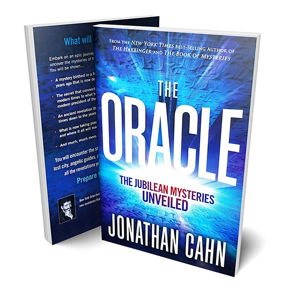
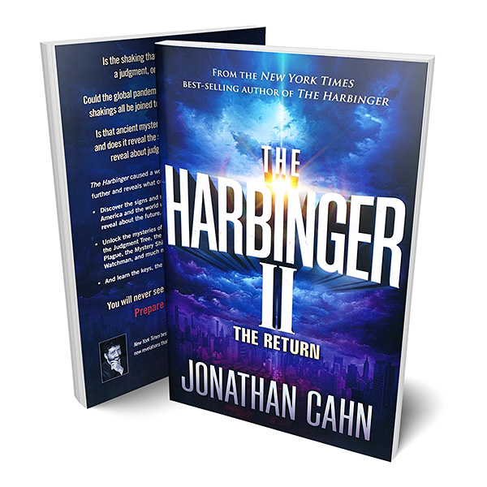
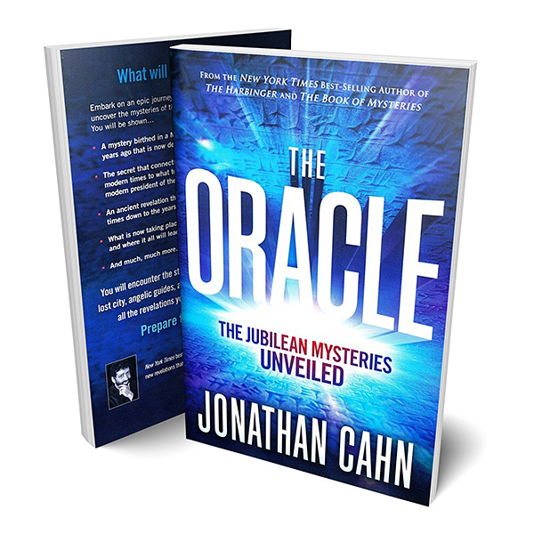
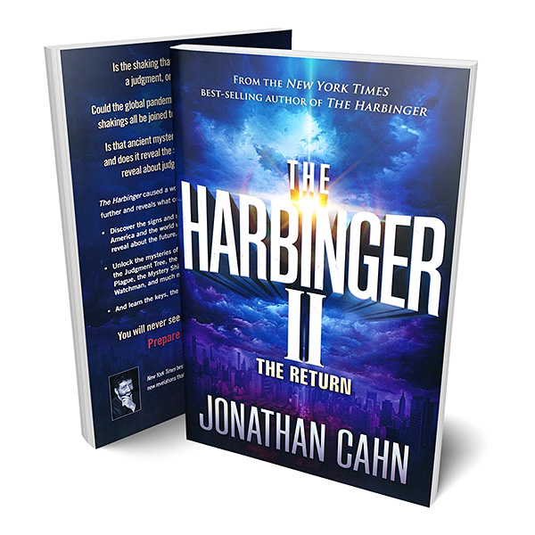

JOSIAH MANIFESTO
The Josiah Manifesto opens up the stunning mysteries that lie behind the dramatic events of recent times that have changed our world and the message hidden within them with regard to what lies ahead. The Josiah Manifesto will take you on a prophetic journey from a Caribbean island to the Washington D.C. to the ancient Valley of Hinnom to the Supreme Court to a desert mountain to an ancient middle eastern temple to the gates of America - to uncover an ancient puzzle that lies behind the events that have altered our lives - Including … The Island of Mysteries, The House of Fallen Children, The Heavenly Court,The Child of the Nile ,The Agents of Heaven on Earth,The Stranger in the Living Room , The Mystery of Days … And Much, Much More! And could these mysteries give you the key to what you need to know to prevail in the days to come even a guide to the end times? It will all be revealed in THE JOSIAH MANIFESTO:The Ancient Mystery & Guide for the End-Times! The book you can’t afford not to read!
Genre
 


